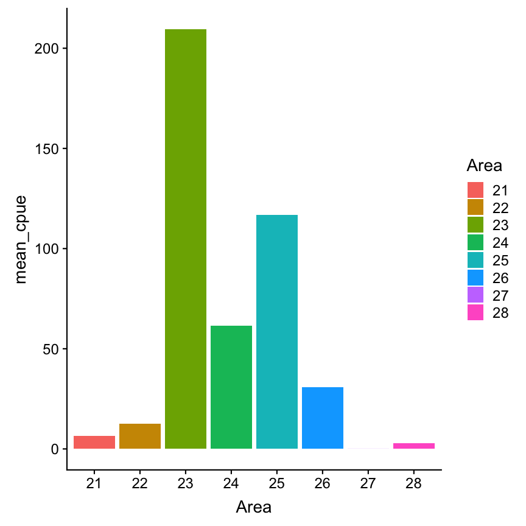

Data Analysis with R
10 - Handling and visualization of categorical data
Saskia A. Otto
Postdoctoral Researcher
Factors

Recall:
Factors are
- vectors that can contain only predefined values,
- used to store categorical data,
- built on top of integer vectors using two attributes:
- the class, “factor”, which makes them behave differently from regular integer vectors,
- and the levels, which defines the set of allowed values.
Recall:
Factors are
- vectors that can contain only predefined values,
- used to store categorical data,
- built on top of integer vectors using two attributes:
- the class, “factor”, which makes them behave differently from regular integer vectors,
- and the levels, which defines the set of allowed values.
- a useful tidyverse package for factors is forcats
String vs. factor
Imagine that you have a vector or variable that contains months:
x1 <- c("Dec", "Apr", "Jan", "Mar")
Using a string to record this variable has two problems:
String vs. factor
Imagine that you have a vector or variable that contains months:
x1 <- c("Dec", "Apr", "Jan", "Mar")
Using a string to record this variable has two problems:
- It doesn’t sort in a useful way.
- There are only twelve possible months, and there’s nothing saving you from typos.
sort(x1)
## [1] "Apr" "Dec" "Jan" "Mar"
x2 <- c("Dec", "Apr", "Jam", "Mar")
Creating factors
You can fix both of these problems with a factor. To create a factor you can convert any vector using the function factor()
f1 <- factor(x1)
f1
## [1] Dec Apr Jan Mar
## Levels: Apr Dec Jan Mar
Creating factors
You can fix both of these problems with a factor. To create a factor you can convert any vector using the function factor()
f1 <- factor(x1)
f1
## [1] Dec Apr Jan Mar
## Levels: Apr Dec Jan Mar
But this does not yet fix the problems...
sort(f1)
## [1] Apr Dec Jan Mar
## Levels: Apr Dec Jan Mar
As you can see, the factor elements get sorted in the order of the levels - which is an alphabetical order.
Creating factors (cont)
Solution:
Create a vector of the valid levels and add it as levels argument:
month_levels <- c(
"Jan", "Feb", "Mar", "Apr", "May", "Jun",
"Jul", "Aug", "Sep", "Oct", "Nov", "Dec"
)
f1 <- factor(x1, levels = month_levels)
f1
## [1] Dec Apr Jan Mar
## Levels: Jan Feb Mar Apr May Jun Jul Aug Sep Oct Nov Dec
Note:
- Whatever order you choose here will be the output order.
- You can include levels here that are not necessarily in your vector.
Creating factors (cont)
Any values not in the level vector will be silently converted to NA:
y2 <- factor(x2, levels = month_levels)
y2
## [1] Dec Apr <NA> Mar
## Levels: Jan Feb Mar Apr May Jun Jul Aug Sep Oct Nov Dec
To access the set of valid levels directly use levels():
levels(f2)
## [1] "Dec" "Apr" "Jan" "Mar"
Factor levels
Sometimes you’d prefer that the order of the levels match the order of the first appearance in the data. You can do that when creating the factor by setting levels to unique(x) or after the factor conversion with fct_inorder() (in forcats):
f1 <- factor(x1, levels = unique(x1))
f1
## [1] Dec Apr Jan Mar
## Levels: Dec Apr Jan Mar
library(forcats)
f2 <- x1 %>% factor() %>% fct_inorder()
f2
## [1] Dec Apr Jan Mar
## Levels: Dec Apr Jan Mar
You can do many other things with a factor using the forcats library
- Reorder factor levels by hand:
fct_relevel() - Reorder factors levels by first appearance or frequency:
fct_infreq() - Reverse order of factor levels:
fct_rev() - Reorder factor levels by sorting along another variable:
fct_reorder() - Collapse factor levels into manually defined groups:
fct_collapse()
Factor labels
You can change the way how the factor levels are displayed. That can be useful if you want to reduce typing effort:
Factor labels
You can change the way how the factor levels are displayed. That can be useful if you want to reduce typing effort:
x <- c(1,2,4,2,4,5,2,5,6,3,5,6,7,3,6,8,2,8)
months <- factor(x, # your vector containing the months
levels = 1:12, # allowed values (in that order)
labels = c("jan","feb","mar","apr","may","jun","jul","aug","sep","oct","nov","dec"))
months
## [1] jan feb apr feb apr may feb may jun mar may jun jul mar jun aug feb
## [18] aug
## Levels: jan feb mar apr may jun jul aug sep oct nov dec
To compare without labels
factor(x, levels = 1:12)
## [1] 1 2 4 2 4 5 2 5 6 3 5 6 7 3 6 8 2 8
## Levels: 1 2 3 4 5 6 7 8 9 10 11 12
Your turn...
Exercise
Create the following dataset
manta_rays <- data.frame(
month = c(9, 3, 5, 1, 7, 12),
catch = c(843, 743, 1229, 500, 1197,607)
)
Now modify manta_rays to get these 2 plots:

A real data demonstration with ICES DATRAS fish data

We will query data from the DATRAS database

Screenshot from the ICES webpage: http://www.ices.dk/marine-data/data-portals/Pages/DATRAS.aspx
Query CPUE per age per area

Load the data (using your file path)
cpue <- read_csv("data/CPUE per age per area_2017-11-20 06_48_16.csv")
print(cpue, n = 5)
## # A tibble: 801 x 17
## Survey Year Quarter Area AphiaID Species Age_0 Age_1 Age_2 Age_3 Age_4
## <chr> <int> <int> <int> <int> <chr> <dbl> <dbl> <dbl> <dbl> <dbl>
## 1 BITS 1991 1 24 126436 Gadus … 0 2.24 6.81 6.48 7.24
## 2 BITS 1991 1 25 126436 Gadus … 0 3.47 24.6 39.9 58.8
## 3 BITS 1991 1 26 126436 Gadus … 0 8.79 8.52 38.1 29.6
## 4 BITS 1991 1 27 126436 Gadus … 0 0 0 0 0
## 5 BITS 1991 1 28 126436 Gadus … 0 0.173 25.8 42.5 34.5
## # ... with 796 more rows, and 6 more variables: Age_5 <dbl>, Age_6 <dbl>,
## # Age_7 <dbl>, Age_8 <dbl>, Age_9 <dbl>, Age_10 <dbl>
So what are the Areas?
ICES subdivisions (SD) in the Baltic Sea

source: EAA and EFTTA position paper, Sept 30th, 2016 (http://www.eaa-europe.org)
Now check whether the data is tidy
- Any NAs?
- Is the format long or wide? Do you want to change it?
- Do the columns have the appropriate data type?
Now check whether the data is tidy
- Any NAs?
- Is the format long or wide? Do you want to change it?
- Do the columns have the appropriate data type?
- Are you satisfied with
Survey,Quarter,Area, orSpeciesbeing character or integer vectors? - Why not convert them into factors ...?
- Are you satisfied with
Now check whether the data is tidy
- Any NAs?
- Is the format long or wide? Do you want to change it?
- Do the columns have the appropriate data type?
- Are you satisfied with
Survey,Quarter,Area, orSpeciesbeing character or integer vectors? - Why not convert them into factors ...?
- Are you satisfied with
cpue$Quarter <- factor(cpue$Quarter)
cpue$Area <- factor(cpue$Area)
cpue$Species <- factor(cpue$Species)
Data transformation
Lets plot the total CPUE of Atlantic cod (Gadus morhua) in the first quarter of 2015 per area:
cpue_total <- cpue %>%
filter(Species == "Gadus morhua", Year == 2015, Quarter == 1) %>%
select(Area, contains("Age")) %>%
mutate(total_cpue = rowSums(select(., contains("Age"))))
Note:
When using the pipe operator and the select function within another function (here rowMeans()) you need to use as first argument the dot as placeholder for the data!
Area sorted automatically
cpue_total %>%
ggplot(aes(x = Area, y= total_cpue,
fill = Area)) +
geom_col()

Now lets reorder the Area factor
# Simply reverse order
cpue_total %>%
ggplot(aes(x = fct_rev(Area),
y = total_cpue, fill = Area)) +
geom_col()

# Reorder manually
cpue_total %>% mutate(Area=fct_relevel(
Area, "22", after = 2)) %>%
ggplot(aes(x=Area, y=total_cpue,
fill = Area)) + geom_col()

What would be if we plot the mean instead of total CPUE:
cpue_mean <- cpue %>%
filter(Species == "Gadus morhua",
Year == 2015, Quarter == 1) %>%
select(Area, contains("Age")) %>%
mutate(mean_cpue = rowMeans(select(.,
contains("Age"))))
cpue_mean %>%
ggplot(aes(x = Area, y= mean_cpue,
fill = Area)) +
geom_col()
 How representatives are the means?
How representatives are the means?
Visualizing errors
Visualizing errors using e.g. geom_errorbar()
cpue_mean %>%
mutate(sd_cpue = apply(
select(., contains("Age")), 1, sd),
se_cpue = sd_cpue/ sqrt(11)
) %>%
ggplot(aes(x = Area, y= mean_cpue,
fill = Area)) +
geom_col() +
geom_errorbar(aes(
ymin = mean_cpue - se_cpue,
ymax = mean_cpue + se_cpue),
width = .2)
# Width of the error bars

Visualizing errors: other options

source: older version of Data Visualization with ggplot cheat sheet (licensed under CC-BY-SA)
Your turn...
Exercise
Pick another species and the year 2015 and find out if there are spatial differences (between areas)
- in total CPUE
- mean CPUE (with error bar)
- in CPUE of each age
Were does the variability in the wide error bars come from?
At the end of the presentation you find a solution code!
Overview of functions you learned today
base functions for factors: factor(x, levels), unique(x), levels()
base functions applied on margin of dataframes: rowSums(), rowMeans(), apply(data, MARGIN, FUN)
dplyr package: select helper function contains()
ggplot2 package: geom_col(), geom_errorbar()
forcats package: fct_inorder(), fct_relevel(), fct_infreq(), fct_rev(), fct_reorder(), fct_collapse()
How do you feel now.....?
Totally confused?

Practice on the exercise data and try out maybe all species or all years. Read chapter 15 on factors in 'R for Data Science'.
Totally bored?

Stay tuned for the next case study where you can play around as much as you want!
Totally content?
Then go grab a coffee, lean back and enjoy the rest of the day...!

Thank You
For more information contact me: saskia.otto@uni-hamburg.de
http://www.researchgate.net/profile/Saskia_Otto
http://www.github.com/saskiaotto

This work is licensed under a
Creative Commons Attribution-ShareAlike 4.0 International License except for the
borrowed and mentioned with proper source: statements.
Image on title and end slide: Section of an infrared satallite image showing the Larsen C
ice shelf on the Antarctic
Peninsula - USGS/NASA Landsat:
A Crack of Light in the Polar Dark, Landsat 8 - TIRS, June 17, 2017
(under CC0 license)
Solution
Solution for all 3 species, all Quarters and 2015
You could calculate your summary statistics such as mean, standard deviation, etc. by applying functions to margins of the dataframe such as rowSums, rowMeans() or apply(x, MARGIN, FUN) as I showed you in the previous examples. Alternatively, if you want to aggregate both across columns AND rows (because you have e.g. repeated entries) or you want to use later the faceting option, convert your data into a long format.
If you keep quarters or years, however, you should calculate total CPUE (summed up across the different ages) separately for each quarter or year!
In this example I will use the long format as I want to facet later also my plots.
Solution for all 3 species, all Quarters and 2015 (cont)
1.Load data and convert variables into factors
cpue <- read_csv("data/CPUE per age per area_2017-11-20 06_48_16.csv")
cpue$Area <- factor(cpue$Area,
levels = c(21,22,23,24,25,26,27,28,29,30,31,32))
2.Create data subset
cpue_sub <- cpue %>% filter(Year == 2015) %>%
select(Area, Quarter, Species, contains("Age"))
3.Make data wide
cpue_subl <- cpue_sub %>% gather(key = "age", value = "cpue", -Area, -Quarter, -Species)
# Same as
cpue_subl <- cpue_sub %>% gather(key = "age", value = "cpue", Age_0:Age_10)
4.Convert Age into a factor
cpue_subl$age <- factor(cpue_subl$age)
# this won't give the order you want (age 10 comes after age 1)
levels(cpue_subl$age)
## [1] "Age_0" "Age_1" "Age_10" "Age_2" "Age_3" "Age_4" "Age_5"
## [8] "Age_6" "Age_7" "Age_8" "Age_9"
Uups, not a great order.
cpue_subl$age <- fct_relevel(cpue_subl$age, "Age_10", after = 10)
# check again
levels(cpue_subl$age)
## [1] "Age_0" "Age_1" "Age_2" "Age_3" "Age_4" "Age_5" "Age_6"
## [8] "Age_7" "Age_8" "Age_9" "Age_10"
5.Now calculate the summary statistics in one step
cpue_stats <- cpue_subl %>%
group_by(Area, Quarter, Species) %>%
summarise(
total_cpue = sum(cpue),
mean_cpue = mean(cpue),
se_cpue = sd(cpue) / sqrt(n()) # n() has to be empty
)
Create and save distribution plots per species
p_cod_tot <- cpue_stats %>% filter(Species == "Gadus morhua") %>%
ggplot(aes(x = Area, y = total_cpue, fill = Area)) +
geom_col() +
guides(fill = "none") +
facet_grid(. ~ Quarter, labeller = label_both)
p_cod_mean <- cpue_stats %>% filter(Species == "Gadus morhua") %>%
ggplot(aes(x = Area, y = mean_cpue, fill = Area)) + # only y replaced
geom_col() +
guides(fill = "none") +
geom_errorbar(aes( # standard error will be added here
ymin = mean_cpue - se_cpue,
ymax = mean_cpue + se_cpue),
width = .2) +
facet_grid(. ~ Quarter, labeller = label_both)
Create and save distribution plots per species (cont)
p_cod_age_q1 <- cpue_subl %>%
filter(Species == "Gadus morhua", Quarter == 1) %>%
ggplot(aes(x = Area, y = cpue, fill = Area)) + # y replaced again
geom_col() +
guides(fill = "none") +
facet_wrap(~ age, labeller = label_both) # ~month replaced with ~age
Show all 3 plots together
To show all these plots together we can use the grid.arrange() function in the gridExtra package where we can specify a layout matrix. Here, I created a 2x2 matrix where I show the total cpue plot (#1) in the left upper panel, the mean cpue plot (#2) in the lower left panel, and the age-specific plot (#3) in the upper and lower right panels combined. ALl 3 saved ggplot objects need to put together in a list for the 'grobs' argument:
gridExtra::grid.arrange(grobs = list(p_cod_tot, p_cod_mean, p_cod_age_q1),
layout_matrix = matrix(c(1,3,2,3), byrow =TRUE, nrow = 2))
See on the next slide the plots
Gadus morhua results
 Press 'p' for a conclusion.
Press 'p' for a conclusion.
p
Plot mean CPUE of all species together
We can use almost the same code as for cod with the only difference that we do not filter any species. Instead, we include the species in the faceting:
p_all_mean <- cpue_stats %>%
ggplot(aes(x = Area, y = mean_cpue, fill = Area)) +
geom_col() +
guides(fill = "none") +
geom_errorbar(aes(
ymin = mean_cpue - se_cpue,
ymax = mean_cpue + se_cpue),
width = .2) +
facet_grid(Quarter ~ Species, labeller = label_both) +
coord_trans(y = "sqrt")
Plot mean CPUE of all species together
p_all_mean
 Press 'p' for a conclusion.
Press 'p' for a conclusion.
p